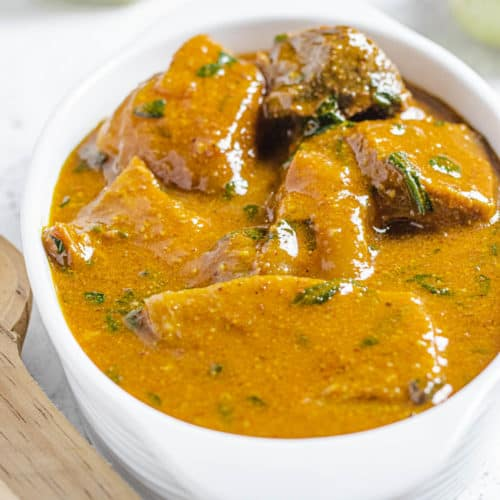

Ogbono is a traditional Nigerian soup made from the seeds of the African oil bean tree. It is typically prepared with a variety of vegetables and meats, creating a rich and flavorful dish that is a staple in many Nigerian households.